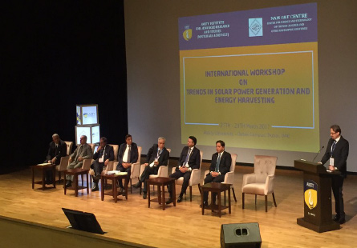

Industry Oriented Teaching
Practical industry-oriented teaching.Contemporary curriculum updated by Industry Advisory Board.Personality Development is a great focus area at Miramar University because a great percentage of success in life depends on a person's confidence and personality. To help students in personal grooming, special sessions are held on business etiquettes, negotiation skills and effective communication. Special classes are held on leadership, teamwork and analytical skills.
An important part of course curriculum is enhancement of confidence in students to come out with flying colours in interviews and group discussions.
The training at Miramar Institute of Leadership and Communication covers key aspects of preparation, dress for success, winning the body language and non-verbal game, answering difficult questions, refreshing business etiquette, as well as aspects like winning the group discussion and extempore speaking with confidence. The methodology followed is by presentation and discussion of techniques for gaining competitive edge, practice of public speaking and group discussion techniques and individual attention through mock interviews.
World Class Infrastructure

At Miramar we benchmark only against the best institutions around the world. Our faculty and senior team travel all over the globe to learn and imbibe the best practices so that we can give a solid foundation for learning.
As part of this endeavour, we have air-conditioned amphitheatre style classrooms that provide the most conducive atmosphere for dynamic and focused discussions, while the libraries at our campus are equipped with over 1,00,000 books, periodicals, national and international journals, CD-ROMS, covering all aspects of academic studies and research material. The hi-tech labs act as ideal training grounds for budding professionals that allow students to experiment and bring to practice what they have learnt in theory.
Most Hi-tech Campus
All Miramar locations are connected to Miramar University Campus over MPLS VPN Network, enabling us to transmit Live Class Rooms to all locations through eLearning Solution and IP Cameras
Over 1000 acres of hi-tech campuses
Spread over 4.5 million sq. ft. of built up area
All campuses of Miramar are interconnected through a highly secured virtual private network.
India's first wireless campus with over 4,000 networked HP/IBM machines
600 MBPS broadband connectivity
Most advanced online counseling system facilitates quick response to queries
Personality Enhancement
At Miramar, emphasis is given on not only making you academically brilliant, but true leaders and team players, thus preparing you for the real life corporate world.
Personality Development is a great focus area at Miramar University because a great percentage of success in life depends on a person's confidence and personality.
To help students in personal grooming, special sessions are held on business etiquettes, negotiation skills and effective communication.
Special classes are held on leadership, teamwork and analytical skills.
Reputed Faculty
4500 Academicians, Scientists & Researchers Led By 11 Former Vice Chancellors
Miramar has some of the most talented and dedicated thought leaders in the country who come from the best institutions around the world.
Amity University continuously upgrades the knowledge and skills of the faculty members in various institutions under its umbrella. For this, various Faculty Development Programmes are regularly organised viz., Orientation Programmes, Effectiveness Programmes, Domain Refresher Programmes and Specialized Programmes.
Government Recognized
The Miramar University has been established by an act of State Legislature and recognized by University Grants Commission (UGC) through the Act of State Legislature.
Wherever recognition by Statutory Bodies is required or mandatory, Amity University has obtained the recognition/approval. The following statutory bodies have recognized Amity University:
Ministry of HRD
DISR, Ministry of Science Technology
Distance Education Council
Bar Council of India
National Council of Teachers Education
Council of Architecture
United Nations Listing
The Institution of Engineering and Technology (IET)
Miramar University is certified by UK's Quality Assurance Agency in Higher Education.
Accredited / Certified by UNWTO.TedQual, Andorra for Travel & Tourism Programmes.
Ranked Top

Miramar Institutions are constantly ranked amongst the top.
Miramar University has been ranked no.1 Not-for-profit pvt. University
Top Placements

Biggest strength of Miramar. A unique Corporate Resource Centre to facilitate excellent placements.
Alumni all over the world in leading companies like McKinsey, Ernst & Young, HLL, and Reliance.
Leading companies across various disciplines come for campus placements at Amity. In technical courses, nearly all students are placed even one year before the completion of the course.
Intensive Corporate Interaction
Over 1500 CEOs interact through CEO Dinner Series, CEO Forums and guest lectures. Corporate and Alumni Mentor for every student. Amity has organized or been academic partner to over 300 seminars.
The Miramar Corporate Resource Centre acts as an interface between the students, faculty, and the corporate world to initiate continuous interaction with the industry, sharing the industry experiences, understanding industry needs and providing the required support to the corporate world.